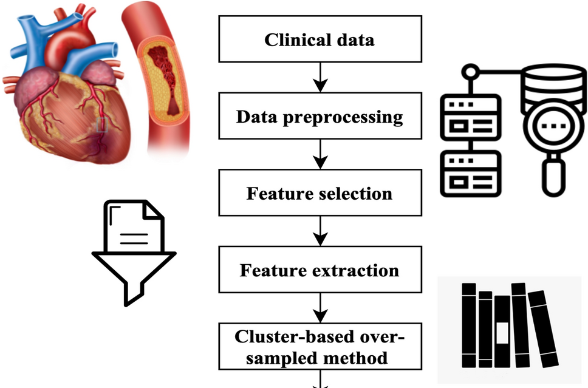

Data · BI · Automation
Hi, I'm Pierre.
I build data tools, dashboards and automation that turn complex operational data into actionable insights and measurable impact.
Selected impact metrics
Experience
Turning operational work into better systems.
A concise view of the roles most relevant to analytics, reporting and automation.
Ontario Government
Program Admin Support Clerk
- Supports program administration in a full-time contract role with the Ontario Public Service.
Clutch
Quality Control Associate
- Built a JavaScript QC reporting tool that reduced report generation from 15 minutes to 3 minutes.
- Worked with cross-functional teams on real-time SQL dashboards and operational reporting.
- Published monthly analytical summaries using Excel PivotTables and maintained reproducible documentation.
Shandong Eagle Software Technology
Power BI Intern
- Developed three Power BI and DAX dashboards that shortened financial analysis cycles by 20%.
- Automated daily ledger reconciliation with Python ETL scripts, reducing manual processing time by 30%.
- Implemented row-level security and delivered weekly analysis for operational teams.
Weihai City Commercial Bank
Data Analyst Intern
- Queried and analyzed more than 10,000 daily transactions in MySQL, improving fraud-detection recall by 20.5%.
- Built three interactive Power BI heat-map dashboards for risk profiling.
- Cleaned and normalized a 1.2M-record database, reducing missing values to approximately 1%.
Featured Projects
Analysis designed to be used.
Three projects that demonstrate dashboarding, calculation systems and statistical modeling.
 01
01
NYC Taxi Power BI Dashboard
Exploratory analysis and an interactive KPI suite built on 8.5M TLC trip records, using Power Query and a star-schema model to surface demand, revenue, distance, duration and tip patterns.
 02
02
Canada Income & Tax Planner (2025)
A responsive employee-income and cash-flow estimator for all 13 provinces and territories, with CPP/QPP, EI/QPIP and RRSP treatment in a pure calculation engine backed by 26 automated tests.

03Heart Attack Analysis
Statistical analysis of clinical data covering preprocessing, a reproducible train/test split, feature selection and regression modeling with AIC/BIC, diagnostics and held-out evaluation.
Skills & Tools
A practical analytics toolkit.
Focused on the tools that move work from raw data to a clear, reusable decision system.
Analytics
- Python
- R
- Statistics
Data & Engineering
- SQL
- ETL
- Data Modeling
- Git
BI & Automation
- Power BI
- Excel
- Power Query
- JavaScript
About Me
Analytical training, applied to real operations.
I'm a University of Toronto graduate with an Honours Bachelor of Science in Mathematics and Statistics. That foundation shapes how I approach data quality, measurement and modeling.
Based in the Toronto area, I'm most interested in the point where data, systems and automation improve day-to-day operations — making reporting faster, decisions clearer and tools easier to trust.
University of Toronto · H.BSc, Mathematics & Statistics · 2025
Contact
Let's build data solutions that make an impact.
Have a data, BI or automation opportunity in mind? I'd be glad to hear about it.